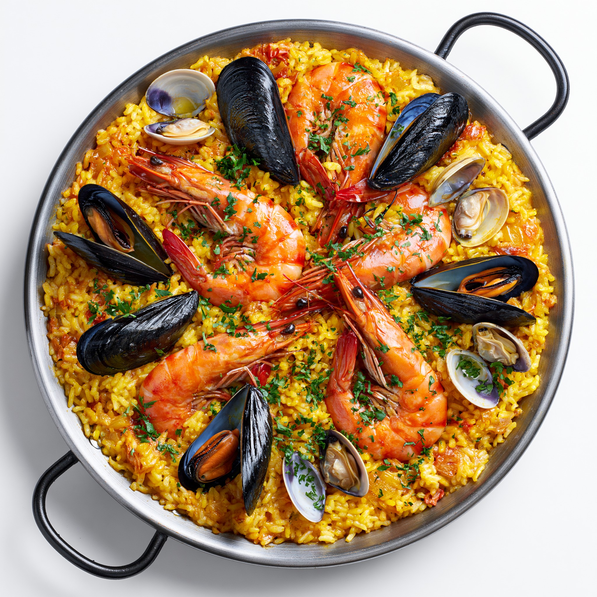

Paella

A delicious paella ready to serve
Seafood paella is a Spanish traditional dish widely popular due to its use of ingredients and taste.
Ingredients
- 400g short-grain rice
- 300g chicken thighs, chopped
- 200g squid, cleaned and sliced into rings
- 200g shrimps, peeled
- 200g mussels, cleaned and scrubbed
- 1 diced bell pepper
- 200g crushed tomatoes
- 1 diced medium onion
- 3 minced garlic cloves
- 1 teaspoon smoked paprika
- 1L seafood broth
- 20-30 saffron threads
- 60ml olive oil
- Salt (to taste)
Steps
- Crush the saffron threads, soak them in 50ml of your seafood broth for 5 minutes, then mix it into the rest of your 1L seafood broth.
- Heat olive oil in a wide skillet. Sear the chicken, shrimp and squid rings until just browned, then remove and set aside.
- Cook at medium-high heat (commonly known as sauté) the onion, bell pepper, and garlic until soft, then stir in tomatoes and paprika to for a thick paste (what is known as sofrito).
- Stir in the rice for 1 minute to coat it in the oil and aromatics.
- Pour the seafood broth liquid and return the chicken; cook uncovered on medium-low for 15-18 minutes whitout stirring.
- Nestle the shrimps, squid and mussels (hinge-side down) into the rice. Cook for 5-8 more minutes until the mussels open and liquid is absorbed, then turn up the heat for 1-2 minutes to crisp the bottom (what is known as socarrat). Discard any mussels that do not open.Let it rest a few minutes before serving.
Home